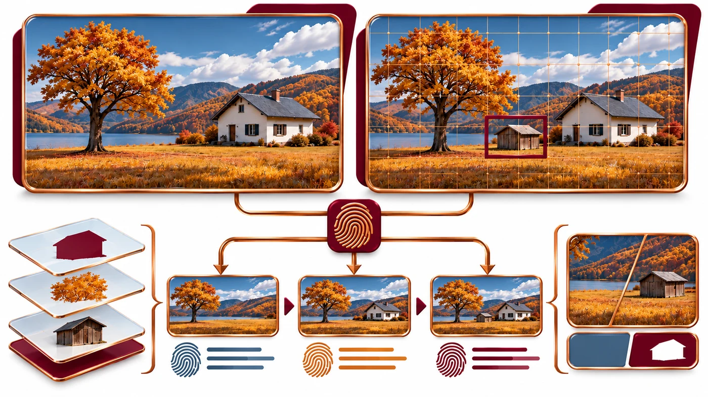
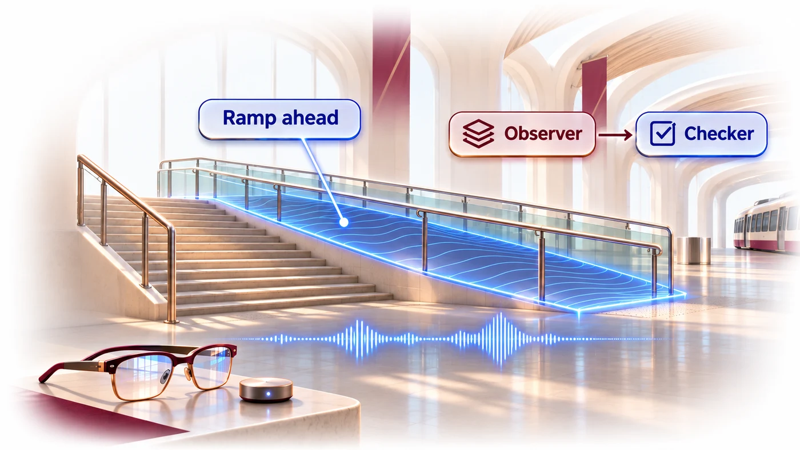

Research

AI Security, Privacy & Forensics
We study what AI systems can reveal about people, how their inputs can be manipulated, and what evidence they leave behind. Our work spans privacy in writing and audio tools, wearable-data integrity, and tracing generative image edits on consumer devices.
Explore projects & publications →
LLMs, Multimodal & Agentic AI
We study how large language models, vision–language models, and AI agents combine evidence from text, images, audio, and sensors. We test whether their conclusions stay grounded when inputs disagree and investigate how mistakes propagate when agents pass information to one another.
Explore projects & publications →
Secure & Sustainable AI Systems
We measure how AI attacks and defenses affect accuracy, energy use, latency, and carbon emissions. Our work ranges from model pruning for wearable and edge systems to emerging questions about how AI agents and data centers manage computing resources.
Explore projects & publications →
Quantum AI & Security
We study how quantum circuit design affects learning and what quantum components contribute to hybrid models. Q-Capsule explores why some circuits become difficult to train, while our ICTAI study compares quantum and classical attention mechanisms. We also investigate reliability and security as emerging directions.
Explore projects & publications →
Cyber-Physical Systems
We study how wearables, phones, and connected devices can make sense of activity in the physical world under tight power, timing, and privacy constraints. Our work includes wearable activity and stress recognition, fall detection with language models, and driver-awareness monitoring.
Explore projects & publications →